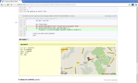

Use
Only WiFi is required. No GPS needed.
Git
$ easy_install geocommit $ cd myproject $ git geo setup $ git commit $ git geo push
Mercurial
$ hg cl http://bitbucket.org/segv/hg-geo $ echo "[extensions] geo=" >> ~/.hgrc $ hg commit
Integrate
Add geocommit support to github and bitbucket. Install the Google Chrome extension or the Greasemonkey User Script for Firefox.
Hooks
To visualize your repository's commits on a map, use our Post-Receive Url service.
github
Add http://hook.geocommit.com/api as a Post-Receive Url.
bitbucket
Add http://hook.geocommit.com/api as a POST service.
Interact
You can already use geocommits with our browser extensions, but we are about to launch a platform for sharing geocommits with friends. Keep track of records. Geocommit above 1000 meters or at 40 km/h. Signup for an invitation

Maps
View the geographic distribution of all projects' contributions.
Visit the large version of this map